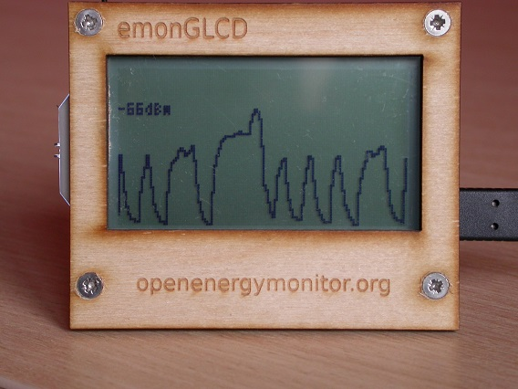

Hi
This has now happened twice. I have 433Mhz remotes that we use to switch off lights and devices on standby. Recently this stopped working. At the same time all emoncms (on 433Mhz) devices in the same building failed. The rest of our emoncms setup which is in a different building with the server continued to work normally. I don't know whether the emontx stops transmitting or the nanodeRF stops receiving. In both cases after about 5 days it all started working again. I had just ordered a receiver so I could build a monitor to see if I could see the signals. Has any one experienced something similar or have any idea what could cause this? The last time it occurred was around 23:00 on the 3rd of July and from memory we may have had a storm that night.
Regards
Ian
Re: Why should all 433Mhz devices fail
Hi Ian,
The 433 Mhz frequency used by OEM lies in a portion of the radio spectrum allocated to Industrial, Scientific, and Medical devices, as well as an Amateur Radio band.
Given the radio modules used in the OEM system don't have a great deal of selectivity, i.e. the ability to reject unwanted signals, it sounds like what you're seeing might be the result of interference from something operating at, or near 433 Mhz, located in the general vicinity of your equipment.
Regards,
Bill
Re: Why should all 433Mhz devices fail
MartinR modified an emonGLCD as a RF
spectrum analysersignal strength meter, if I remember correctly [I didn't!]. It would be worth looking up that post.Re: Why should all 433Mhz devices fail
MartinR modified an emonGLCD as a RF spectrum analyser, if I remember correctly.
Hi Robert,
Is this post you're referring to? http://openenergymonitor.org/emon/node/2395
Martin called it a RF Signal Strength meter, but it looks like it could be useful for troubleshooting Ian's issue.
and here's another one showing a transmission clash, I think this is OOK from my weather station...

Re: Why should all 433Mhz devices fail
You're right Bill, I ruminated on it a while then it took me more of a while to find it! I'd edited my post before I'd seen yours! But it still wasn't bad for 2 years ago.
Re: Why should all 433Mhz devices fail
I think the only reason I remembered it was I'd made a comment on Martin's post.
Hopefully, it'll help Ian resolve his issue
Re: Why should all 433Mhz devices fail
I have converted a RFM2Pi firmware to use the RFM69CW RSSI value to plot a scope like trace over a serial port, similar idea to Robin's waveform tools, seen as a vertical realtime trace in the arduino IDE (or minicom etc).
The "trace_mode" can be selected as a function on a fully working sketch, so when you suspect there is something adrift you can just dial in and take peak without changing sketches. It isn't as tidy as Martin's glcd method and he uses a 10bit adc attached to the rf signal rather than reading an existing value of only 100 steps, but it doesn't require a hw mod or glcd and it seems to work ok.
The sample rate is variable from 0.1 secs to 2.5secs in 0.1s steps, quiet_mode, group, promiscuous mode and frequency adjustments work as usual to help filter/tune the issue.
I will tidy it up and post it over the weekend.
Paul
Re: Why should all 433Mhz devices fail
Many thanks.
I have an emonGLCD so I will build the the signal strength meter ready to monitor if it happens again. I can only think something is operating periodically that is interfering with the signal. This is strange as we have no immediate neighbours. We are one of the few residents surrounded by holiday homes which are seldom if ever occupied. The only things that the owners leave on are the boilers. We have keys so I can take my signal strength meter into their property and see if the signal changes.
Regards
Ian
Re: Why should all 433Mhz devices fail
I performed the emonGLCD mod and have used it for troubleshooting and antenna testing - it's great!
In my neighborhood there is a TON of 433mhz traffic going on. We have smart power and water meters... the water meters are the main offender, blasting out 20 second long strings at very high power. I have my emonTX in the same room as the RFMPi receiver, but the smart meters mounted outdoors on the surrounding homes block any communication during their bursts. Fortunately they are not too frequent.
I also discovered interference in other places where you wouldn't expect it. For example, I took the emonGLCD to a farm out in the middle of nowhere. I was surprised to see there was a lot of traffic as well. In that case I tracked it down to their Davis weather station which was fully optioned with multiple soil moisture sensors, leaf wetness sensors, and the irrigation system remote which was also interfering.
Antenna testing:
Offending transmitter on farm:
Re: Why should all 433Mhz devices fail
I know you are going to go the glcd route, but just as a follow up to my previous post above, I have now posted the code for Adding a trace_mode to rfm2pi firmware as promised.
Paul